Sagar Rangi · 2026-10-13T16:39:11 · publish
Categories: Copilot Studio, Copilot Studio & Agent Factory, Power Platform ALM
Tags: Agent Factory, Agent Governance, Copilot Studio, Deployment Pipelines, Microsoft Entra ID, Power Automate
An Agent Factory becomes production-ready only when agent releases are controlled as carefully as the agents themselves. This implementation adds a production approval guard to a custom Power Platform pipeline. Makers can prepare and validate a solution in DEV and TEST, but the PROD stage pauses until an authorized approver makes an explicit decision. After approval, the release executes under a dedicated service principal rather than the maker’s personal identity.
The pilot uses the AF-PILOT-Standard-Release pipeline, the APP-AF-Pipeline-Prod-Deployer service principal, and a Power Automate approval flow in the pipeline host. The final end-to-end test deployed AF Pilot Agent version 1.0.0.3 to AF-PILOT-PROD as a managed solution.
In Microsoft Entra admin center, register a single-tenant application named APP-AF-Pipeline-Prod-Deployer. A redirect URI is not required for this server-to-server deployment identity.
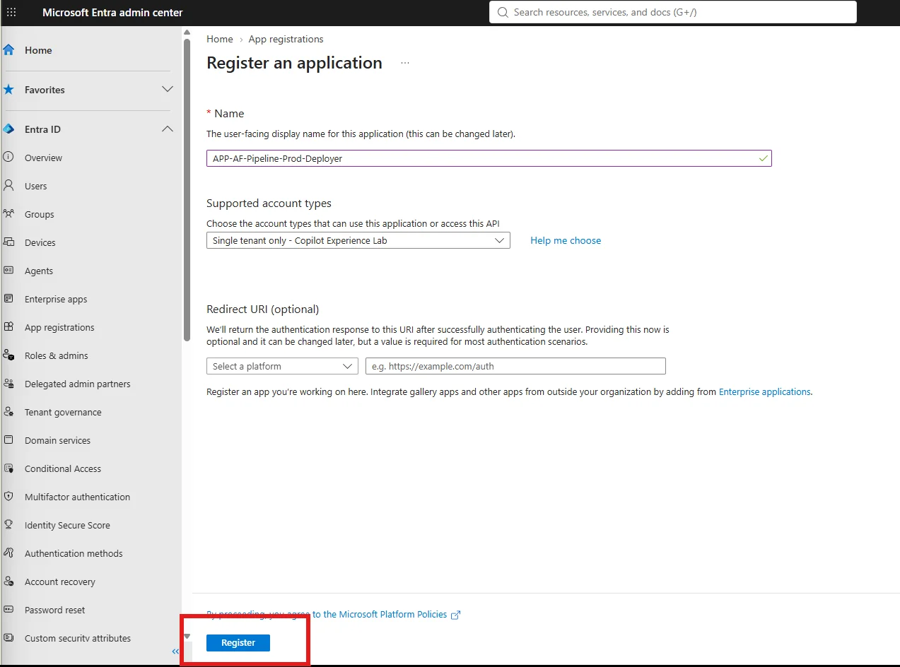
Create a credential for the pilot and record its expiration. The screenshot masks the secret value; never place the value in a blog, source repository, or pipeline record. For production, prefer a certificate or federated credential. If a client secret is retained, store it in a controlled secret store and rotate it before expiry.
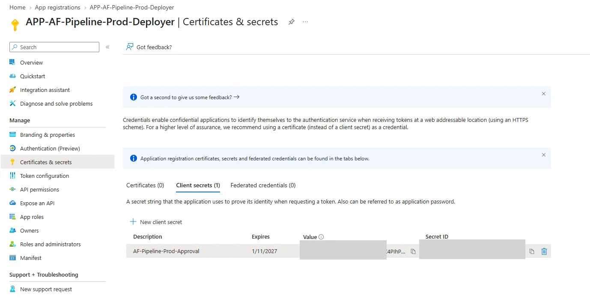
Add the pipeline stage owner as an owner of the Enterprise Application service principal. Ownership of only the App Registration is not sufficient for delegated-stage configuration.
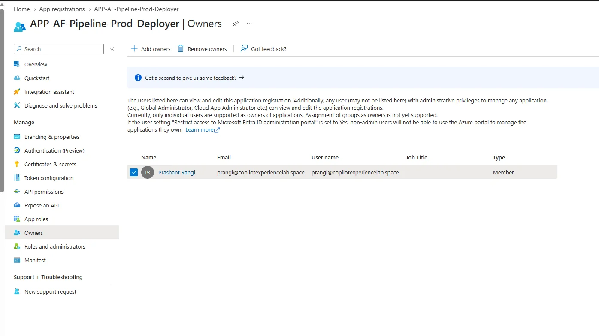
Open AF-PILOT-HOST in Power Platform admin center and go to Settings → Users and permissions → Application users.
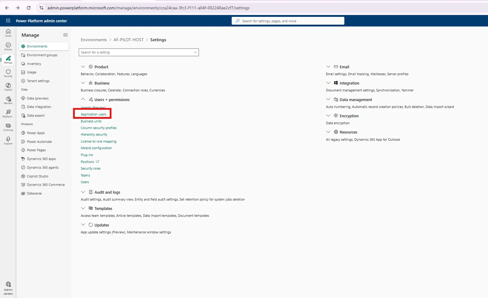
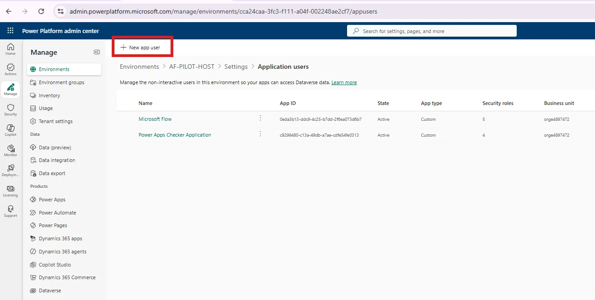
Select Add an app, search for APP-AF-Pipeline-Prod-Deployer, and select the matching application ID.
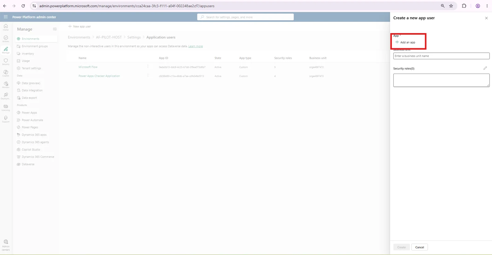
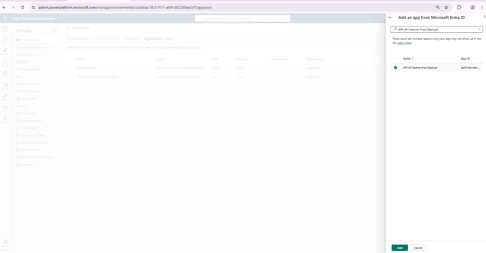
Use the host environment’s root business unit and assign Deployment Pipeline Administrator.
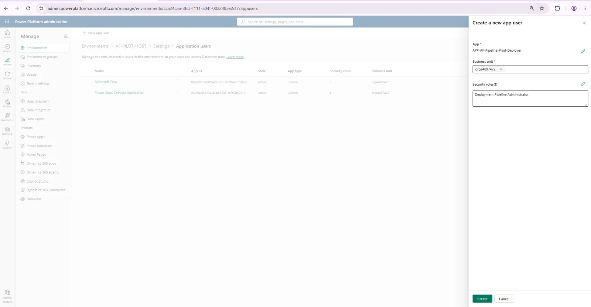
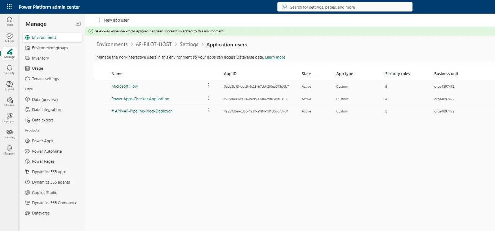
The Entra app registration identifies the deployment service principal, but it cannot deploy into AF-PILOT-PROD until it also exists there as a Dataverse application user. This step creates that non-interactive PROD identity and gives it the role required to import the solution.
| Field | Value for this pilot |
|---|---|
| Environment | AF-PILOT-PROD |
| Application | APP-AF-Pipeline-Prod-Deployer |
| Application (client) ID | 4a2513e-cd5c-4931-a484-101c0dc707d4 |
| Business unit | The root business unit of AF-PILOT-PROD (org7b4ba82f in this lab) |
| Security role | System Administrator |
| Expected state | Active |
1. In the Power Platform admin center, open Environments and select AF-PILOT-PROD.
2. Select Settings and expand Users + permissions.
3. Select Application users.
4. Confirm you are still in AF-PILOT-PROD before creating or editing the application user.
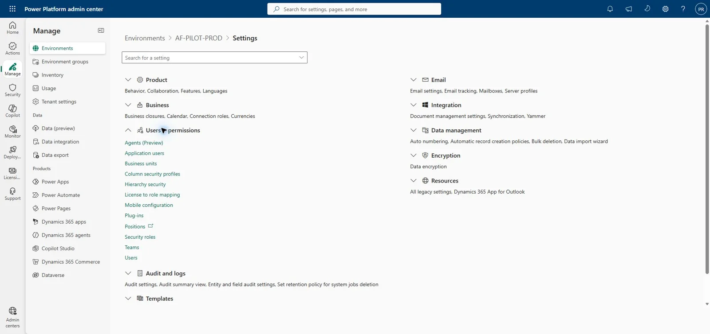
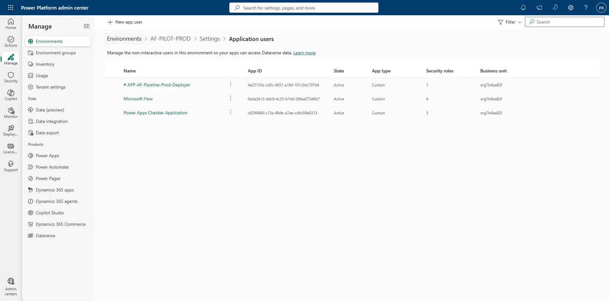
Decision point: if APP-AF-Pipeline-Prod-Deployer is already present with the expected client ID, do not create a duplicate. Open the existing row and continue with the verification in section 4.5.
1. Select New app user, and then select Add an app.
2. Search for APP-AF-Pipeline-Prod-Deployer or paste client ID
3. Select the result only when both the application name and client ID match.
The application picker hides applications that already have an application-user record in the current environment. If this application does not appear in PROD, return to the list and verify the existing record instead of creating another one.
1. Open the Business unit field in the Create a new app user pane.
2. Select org7b4ba82f, which is the root business unit of AF-PILOT-PROD in this lab.
3. Do not select the AF-PILOT-HOST business unit; business units are environment-specific.
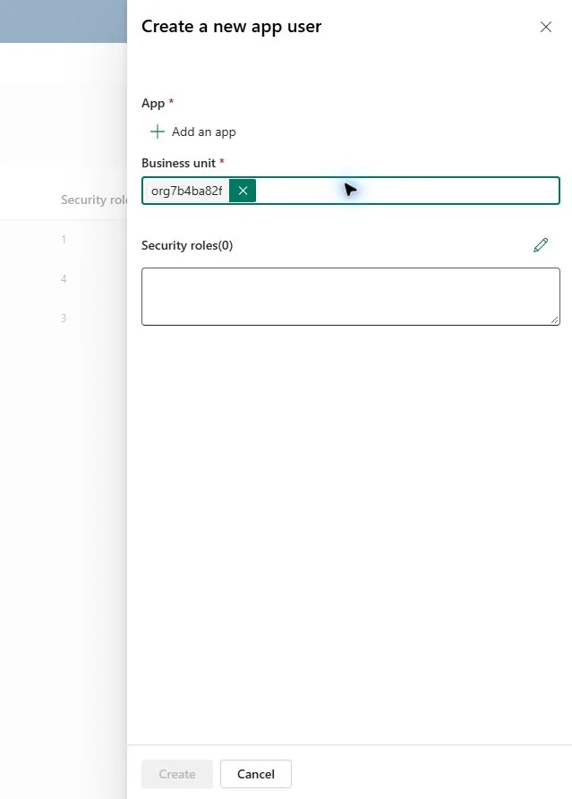
1. Select Edit security roles after the application and business unit are populated.
2. Confirm the role pane shows APP-AF-Pipeline-Prod-Deployer and business unit org7b4ba82f.
3. Scroll to System Administrator and select it. For this pilot, no additional PROD role is required.
4. Confirm the role selection. Do not select Create until the app, PROD business unit, and role have all been checked.
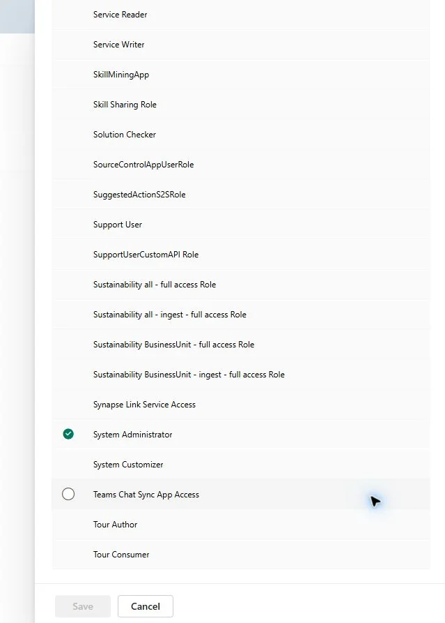
Important: Deployment Pipeline Administrator is the role used by this service principal in AF-PILOT-HOST. In AF-PILOT-PROD, assign System Administrator so delegated deployment can import all solution components, including plug-ins or other code components.
1. Return to the Create a new app user pane and review the selected application, business unit, and security role.
2. Select Create. Wait for the success message and return to the AF-PILOT-PROD Application users list.
3. Locate APP-AF-Pipeline-Prod-Deployer.
4. Confirm the client ID, Active state, and PROD root business unit. The value 1 under Security roles is a role count, not the role name.
5. Open the application user and confirm that the assigned role is System Administrator with assignment type Direct.
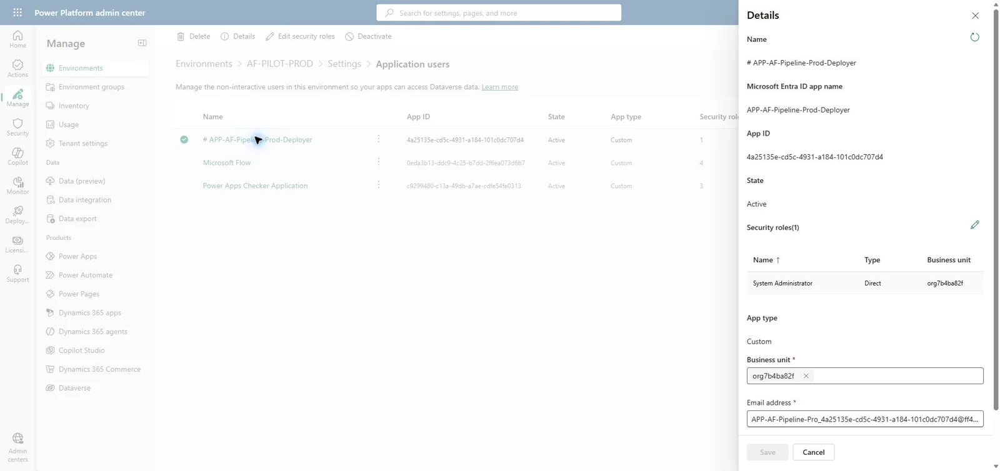
The completed state is an Active application user in AF-PILOT-PROD with the expected client ID, business unit org7b4ba82f, and a directly assigned System Administrator role. This validates the target identity required by the delegated PROD deployment stage.
In the Deployment Pipeline Configuration app, open Deploy to PROD. The starting state shows delegated deployment disabled.
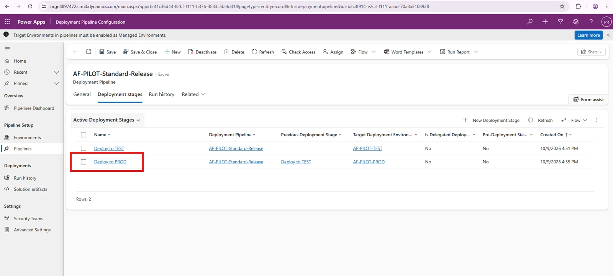
Configure the stage with the values below. Keep sharing requests disabled for the pilot. Pre-Export and Pre-Deployment gates are separate extensibility controls and are not required for this approval design.
| Setting | Pilot value | Purpose |
|---|---|---|
| Is Delegated Deployment | Yes | Pauses the stage for approval and runs the deployment as the delegate. |
| Delegated Deployment Type | Service Principal | Removes dependency on a maker’s personal identity. |
| SPN Client Id | Identifies APP-AF-Pipeline-Prod-Deployer. | |
| Allow sharing requests | No | Keeps the pilot focused on the release decision. |
| Pre-Export Step Required | No | No custom source-environment gate is used. |
| Pre-Deployment Step Required | No | The delegated-deployment approval is the PROD gate. |
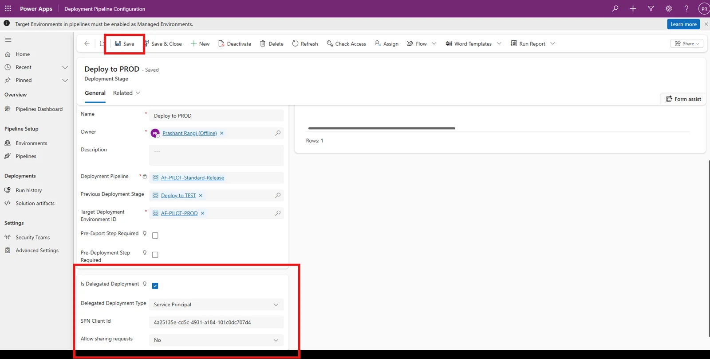
Create an unmanaged solution in AF-PILOT-HOST to contain the approval flow and its connection references. Keeping this automation in a dedicated solution makes the control portable and supportable.
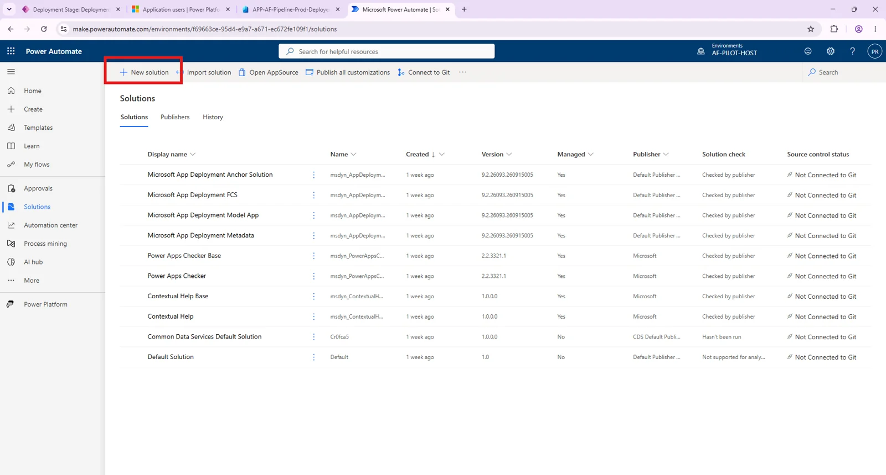
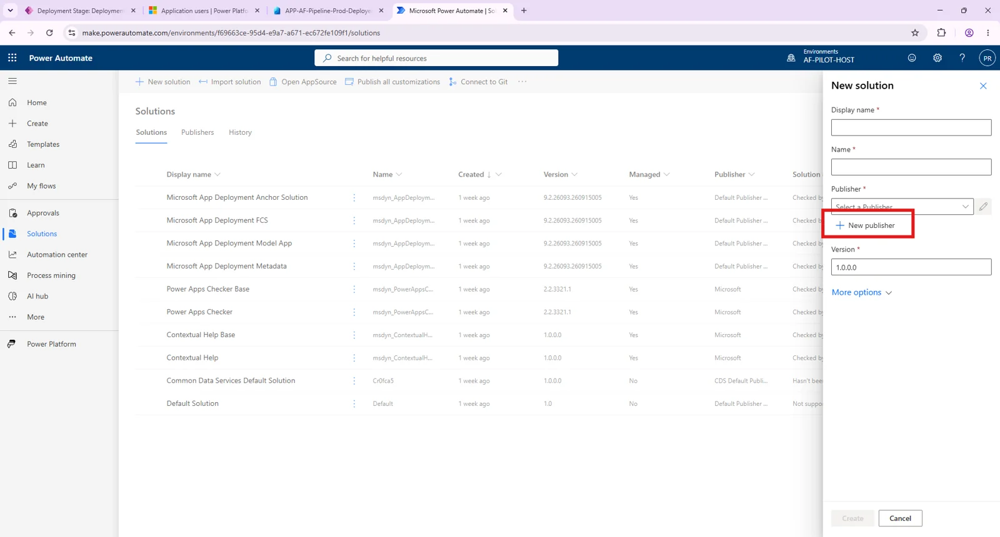
Use a stable publisher prefix and choice value prefix. The pilot uses AF Pipeline Governance, prefix af, and choice value prefix 74000.
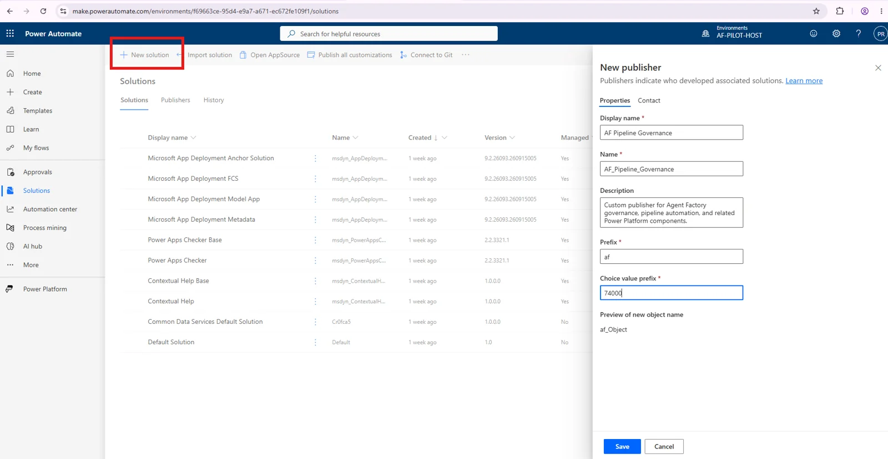
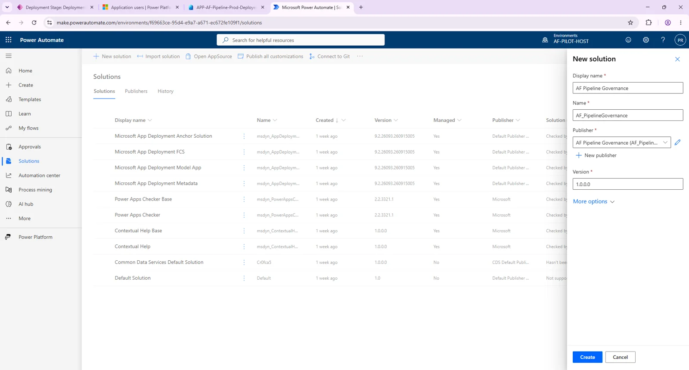
Inside the governance solution, create an automated cloud flow named AF – PROD Deployment Approval. Use the Microsoft Dataverse When an action is performed trigger and select the pipeline approval-start event exposed by the host.
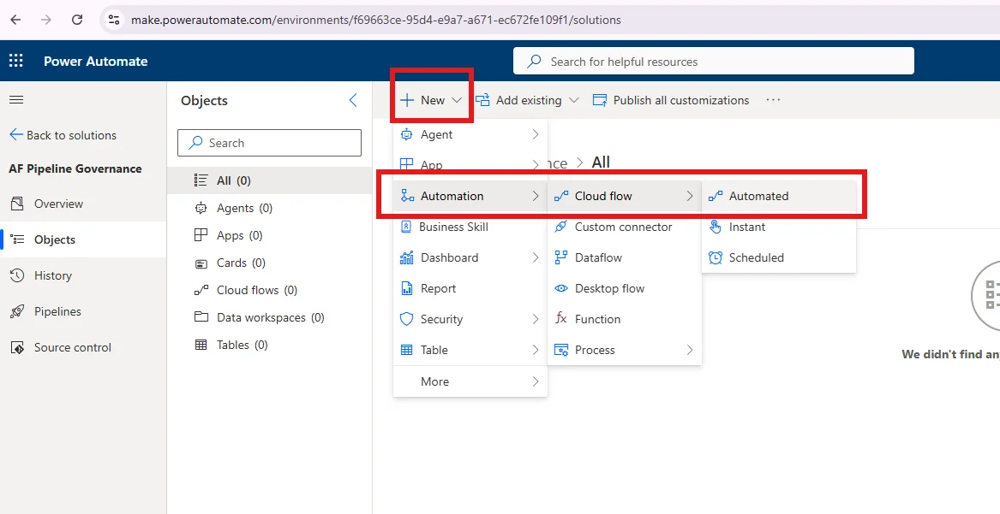
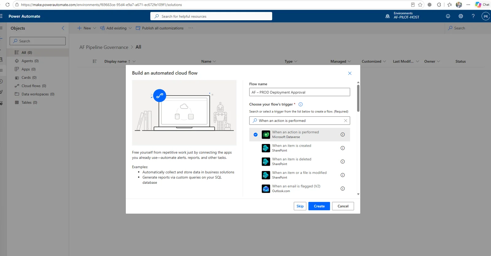
Add Start and wait for an approval, route the result through a condition, and finish both branches with the Dataverse UpdateApprovalStatus unbound action. The callback must use the service principal’s Dataverse connection—not a user connection.
Populate the approval title, approver, deployment details, and a link back to the run. Save and turn on the flow. Test both decision paths before calling the gate production-ready.
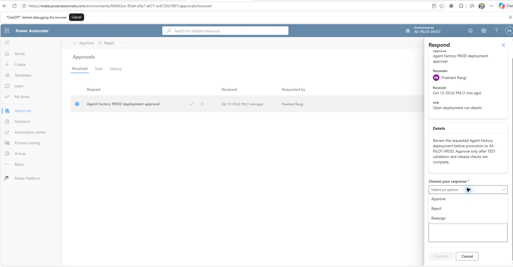
From the unmanaged solution in DEV, select Deploy through pipelines, choose Deploy to PROD, review the solution and target, and submit the request. The stage should move to pending approval; it must not import the solution yet.
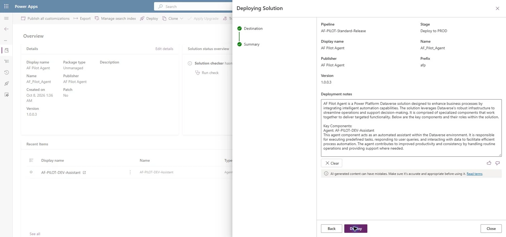
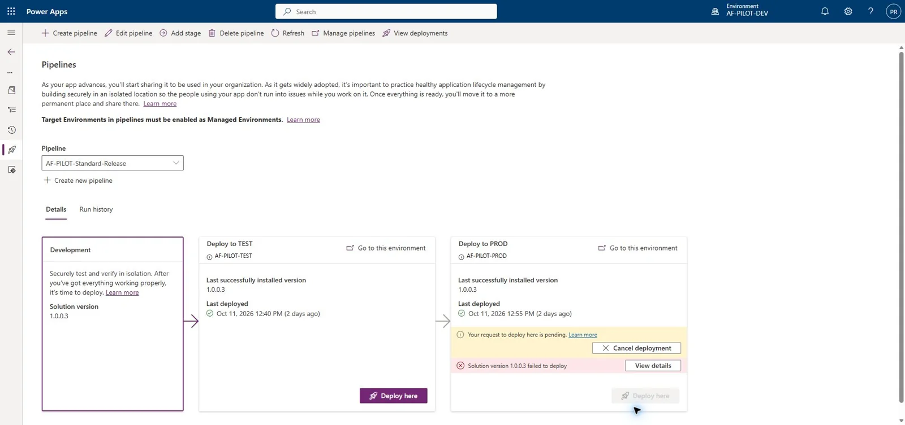
Open the approval, verify the solution, requester, target stage, and deployment details, then select Approve. The response is recorded before the pipeline continues.
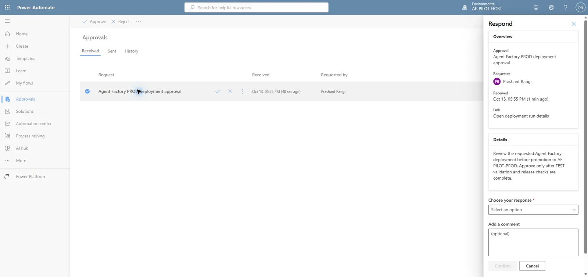
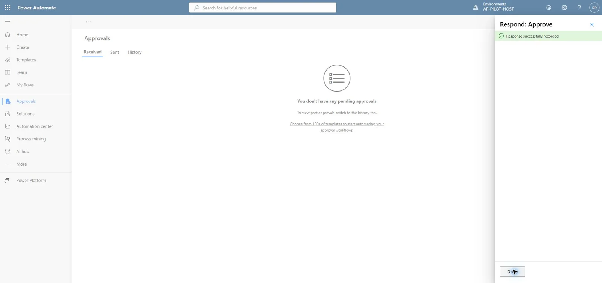
The control was validated in both directions. A rejected request was blocked and left PROD unchanged. An approved request completed the flow, continued the delegated pipeline stage, and imported the managed solution into PROD.
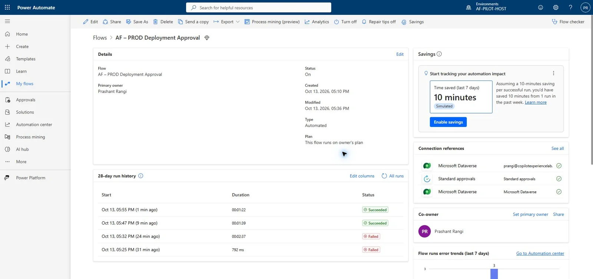
The older failed runs visible in the history were troubleshooting evidence: the first issue was an invalid Assigned To value; the second was a rejection callback using a user Dataverse connection. Both were corrected before the successful run.
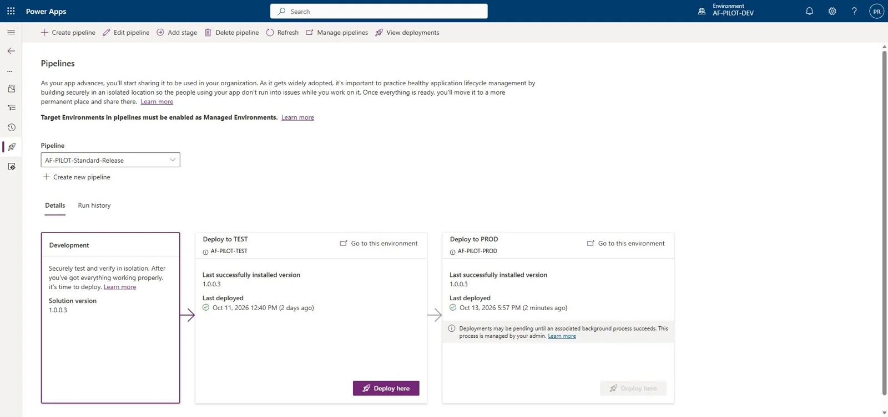
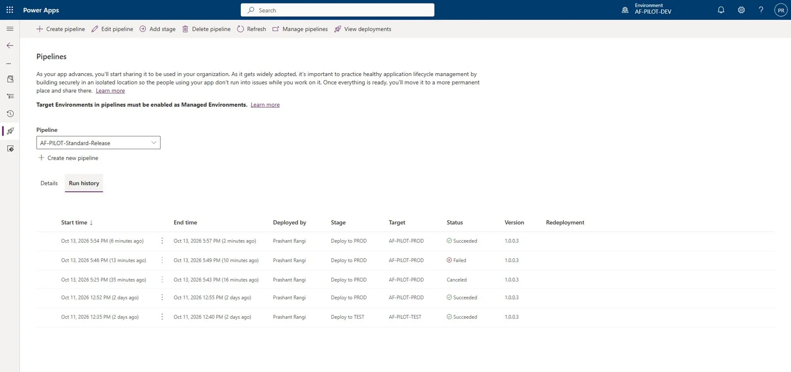
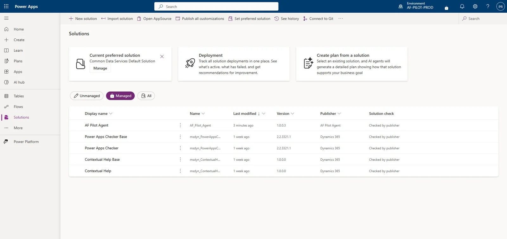
The approval guard ensures that production deployments proceed only after an authorized approval decision. It separates the maker, approver, and deployment identities to prevent uncontrolled releases. Approved deployments run through a dedicated service principal instead of a user’s personal identity. Rejected or pending requests cannot progress to the production environment. This provides the governance, auditability, and repeatability required for operating Agent Factory securely in production.